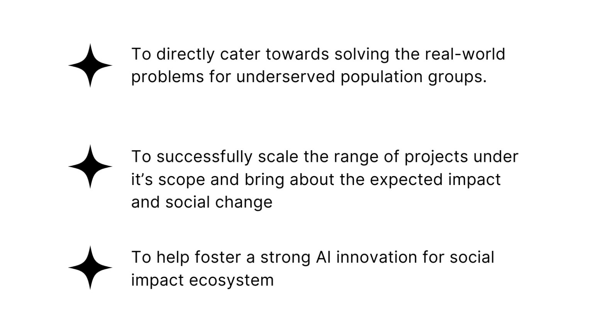

The Imperative to Scale Societal Solutions
Nearly three billion people worldwide remain underserved by technology, underscoring an urgent need for scalable, tech-enabled solutions in areas such as education, healthcare, and agriculture. These solutions are critical for advancing the United Nations Sustainable Development Goals (SDGs). Microsoft has developed a portfolio of research-based innovations demonstrating measurable impact at smaller scales. Notable among them is Karya, which has evolved into a self-sustaining, independent venture.
Defining A4I: Vision, Approach, and Coordination
The AI Innovation and Inclusion Initiative (A4I) is a joint effort between Microsoft and IIIT-B, grounded in the belief that artificial intelligence must be intentionally designed, equitably distributed, and sustainably governed to unlock meaningful societal impact.
A4I aims to scale proven Microsoft-led innovations into Digital Public Goods (DPGs) - open, accessible technologies designed for broad, public benefit. Through collaborations with domain-specific partners in sectors such as healthcare, education, and accessibility, A4I will develop solutions that are both impactful and replicable on a scale. All these solutions will be open sourced under MIT License.
Beyond supporting technology deployment, A4I functions as a strategic coordination hub. It enables structured collaboration between Microsoft, IIITB and its domain partners while ensuring operational alignment and effective execution. The A4I core management team will maintain consistent stakeholder engagement, conduct regular check-ins, and share progress updates, thereby supporting the successful scaling of all initiatives under its purview.
Objectives of A4I
AI Innovation and Inclusion Initiative will be the strategic hub that coordinates the technology scaling efforts. This hub will provide a platform for collaboration with Microsoft and various domain partners. It will also institutionalize a culture of innovation to facilitate and nurture innovation for years to come.
